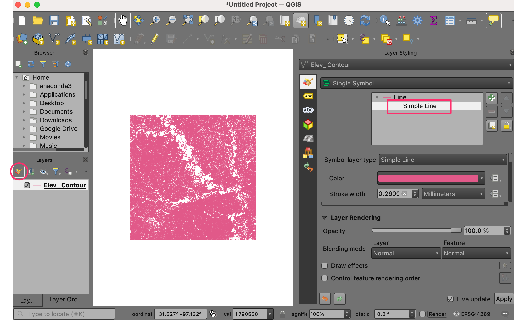
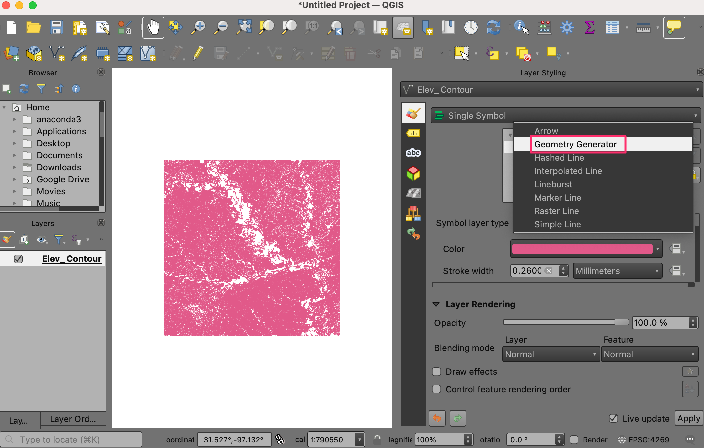
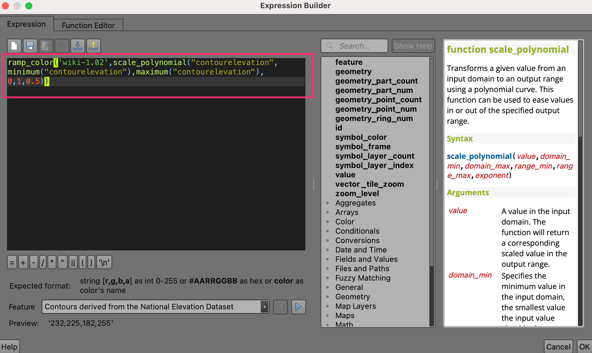

Angepasste Python Funktionsausdrücke verwenden (QGIS3)¶
In QGIS sind Ausdrücke sehr mächtig und werden in vielen Schlüsselfunktionen verwendet: Auswahl, Berechnung von Feldwerten, Symbolisierung, Beschriftung usw. QGIS unterstützt auch benutzerdefinierte Ausdrücke. Mit ein wenig Pythonprogrammierung kann man eigene Funktionen definieren, die innerhalb der Ausdrucksverarbeitung genutzt werden können.
Aufgabenübersicht¶
Wir werden eine angepasste Funktion definieren, die die UTM zone number eines Kartenfeatures findet. Wir nutzen die Funktion dann, um einen Ausdruck zu erstellen, der die UTM-Zone als Map-Tip anzeigt, sobald man den Punkt mit der Maus überfährt.
Weitere Fähigkeiten die wir erlernen¶
Verwendung des Hilfsmittels
Kartenhinweiseum angepassten Text anzuzeigen, sobald man ein Feature mit der Maus berührt.
Beschaffung der Daten¶
Wir werden folgenden Datensatz von Natural Earth verweden: Populated Places. Lade folgenden Datensatz herunter: simple (less columns) dataset
Arbeitsablauf¶
Finde die Datei
ne_10m_populated_places_simple.zipim QGIS Browser und erweitere sie. Wähle die Dateine_10m_populated_places_simple.shpund ziehe sie in den Arbeitsbereich.

Gehe zu oder klicke auf den Knopf Objekte über Ausdruck wählen in der Attributwerkzeugleiste.

Gehe im Dialogfenster Objekte über Ausdruck wählen zum Tab Funktionseditor. Hier können wir beliebigen Python-Code eingeben, der dann von der Ausdrucksverarbeitung ausgeführt wird.

Wir werden eine angepasste Funktion
GetUtmZoneerstellen, die die UTM-Zonennummer für jedes Feature ermittelt. Angepasste Funktionen beziehen sich in QGIS auf Features. Wir werden den Schwerpunkt der Featuregeometrien verwenden. Mit Hilfe der geographischen Breite und Länge des Schwerpunktes werden wir die UTM-Zone bestimmen. Wir werden außerdem die Buchstaben ‚N‘ oder ‚S‘ zuweisen, je nachdem ob sich das Feature auf der Nordhalbkugel oder der Südhalbkugel befindet. Drücke auf den + Knopf in der linken unteren Ecke des Fensters und gebe als Dateinameutm_zones.pyein. Man kann auf den Bereich Hilfe unten im Fenster klicken, um ihn zu schließen und den Bereich mit dem Programmcode zu erweitern.

UTM-Zonen sind Projektionszonen entlang der Längengrade die von 1 bis 60 nummeriert sind. Jede UTM-Zone ist 6 Grad breit. Wir nutzen eine mathematische Funktion, um die passende Zone für einen gegebenen Längengrad zu ermitteln. Diese Formel funktioniert für fast alle UTM-Zonen. Die Ausnahmen sind unter special UTM zones verzeichnet. Wir geben den folgenden Code im Editierfenster ein. Nach der Eingabe klicken wir auf Lade- und Speicherfunktionen.
import math from qgis.core import * from qgis.gui import * @qgsfunction(args=0, group='Custom', usesgeometry=True) def GetUtmZone(value1, feature, parent): """Return the UTM Zone of the feature's geometry as a String""" centroid = feature.geometry() longitude = centroid.asPoint().x() latitude = centroid.asPoint().y() zone_number = math.floor(((longitude + 180) / 6) % 60) + 1 if latitude >= 0: zone_letter = 'N' else: zone_letter = 'S' return '%d%s' % (int(zone_number), zone_letter)

Bemerkung
Momentan gibt es keine Möglichkeit eine Datei mit einem Ausdruck über die graphische Oberfläche zu löschen. Wenn man die Datei utm_zone.py löschen möchte, geht man zu und löscht die Datei aus dem Ordner .
Wir gehen im Fenster „Objekte über Ausdruck wählen“ zum Tab „Ausdruck“. Nach Erweitern der Gruppe Custom sehen wir die neue angepasste Funktion
GetUtmZonein der Liste. Wir können diese Funktion genauso wie jede andere Funktion verwenden. Gebe den folgenden Ausdruck in den Editor ein. Der Ausdruck selektiert alle Punkte die sich innerhalb der UTM-Zone33Nbefinden. Wenn man auf Zu Objekten zoomen klickt, ändert sich die Kartendarstellung und wenn man auf Objekt wählen klickt, verändern die Punkte in der UTM-Zone 33N ihre Farbe zu gelb.GetUtmZone() = '33N'

Bemerkung
Wegen eines Fehlers funktioniert das script nicht in älteren Versionen von QGIS 3. Der Fehler wurde ab Version 3.4.5 behoben.
Zurück im QGIS Hauptfenster sehen wir einige gelb hervorgehobene Punkte. Das sind die Punkte die innerhalb der von uns im Ausdruck angebenen UTM-Zone liegen.

Wir haben gesehen, wie man eine angepasst Funktion benutzen kann, um Features durch Ausdrücke zu selektieren. Wir werden nun dieselbe Funktion in einem anderen Zusammenhang verwenden. Eine der versteckten Juwelen in QGIS ist das Tool Kartenhinweise. Dieses Tool zeigt benutzerdefinierten Text, wenn man ein Feature mit der Maus überfährt. Klicke mit der rechten Maustaste auf den Layer
ne_10m_populated_places_simpleund wähle Eigenschaften.
Gehe zum Punkt Anzeigen. Hier kann man Text eingeben, der beim Überfahren des Features mit der Maus angezeigt wird. Noch schöner ist, dass man Attributwerte des Layers und Ausdrücke verwenden kann, um eine noch viel nützlichere Nachricht zu erzeugen. Klicke auf den Knopf Ɛ.
Wir sehen den schon bekannten Ausdruckseditor. Wir nutzen die Funktion
concat, um den Wert des Feldesnameund das Resultat unserer angepassten FunktionGetUtmZonezu verbinden. Gebe den folgenden Ausdruck ein und klicke auf OK.concat("name",' | UTM Zone: ', GetUtmZone())
Wir sehen den Ausdruck jetzt als Wert für den Anzeigenamen. Klicke auf Einfügen um ihn als HTML-Kartenhinweis hinzuzufügen und drücke dann OK.

Bevor wir fortfahren, heben wir die Selektion des vorhergehenden Schrittes wieder auf. Gehe zu oder klicke auf den Knopf Objektauswahl aller Layer aufheben auf der Attributwerkzeugleiste.

Aktiviere die
Kartenhinweiseunter oder durch Klicken auf den Knopf Kartenhinweise anzeigen in der Attributwerkzeugleiste.Beim Zoomen auf einen beliebigen Bereich der Karte wird nun beim Bewegen des Mauszeigers über ein Feature die zugehörige UTM-Zone als Kartenhinweis angezeigt.

If you want to give feedback or share your experience with this tutorial, please comment below. (requires GitHub account)